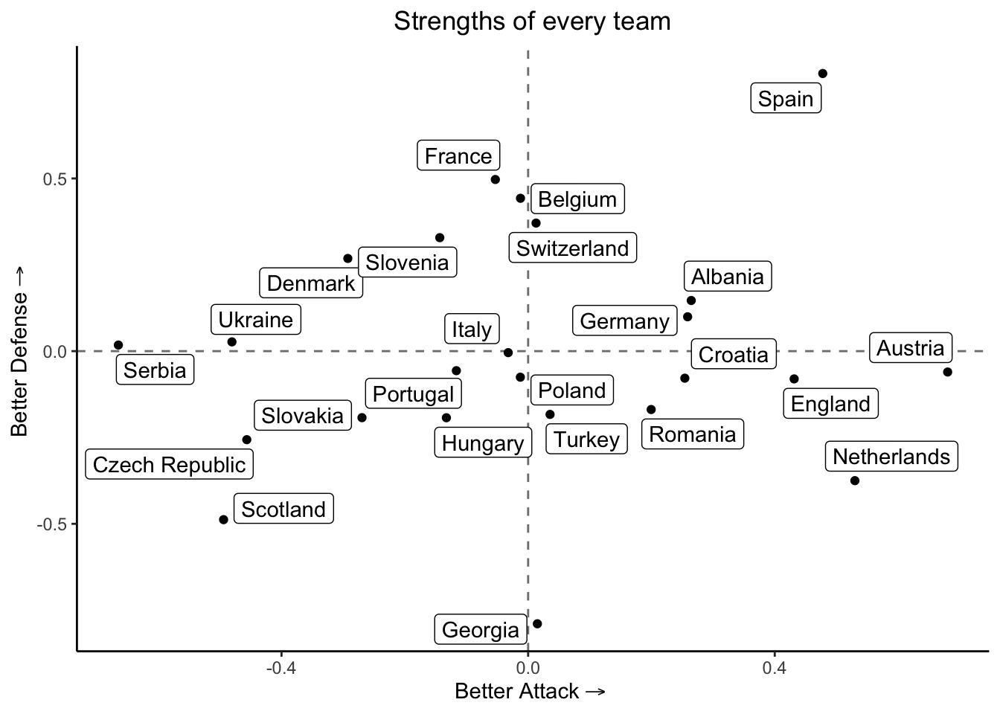
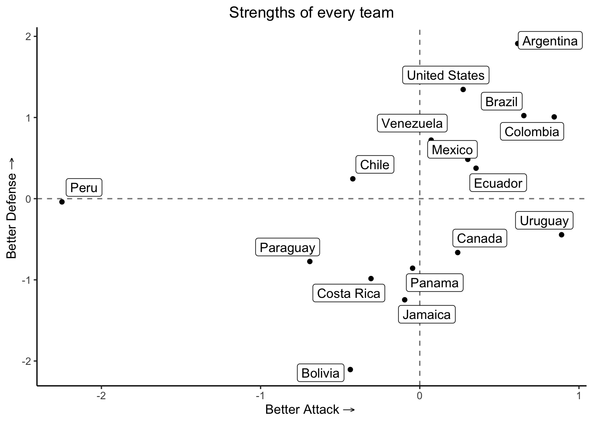

require(rstanarm)
require(rstantools)
require(bayesplot)Predicting Euro & Copa America - 2024
I proposed a statistical model to analyze the results of the Euro Cup and the Copa America 2024.
In this project, I will propose a model for the Euro & Copa America - 2024 scores.
Packages
I will use a Bayesian model, so we need the following libraries
As well as
require(readr)
require(dplyr)
require(lubridate)
require(ggplot2)
require(ggrepel)
require(latex2exp)Data
The data is contained in this repository https://github.com/martj42/international_results.
urlfile = "https://raw.githubusercontent.com/martj42/international_results/master/results.csv"We load the data
data <- read_csv(url(urlfile), show_col_types = FALSE)The proposed model is based on the teams’ strengths attacking and defending. Therefore, we will consider only the games played during 2024. An improved model would be one with dynamic strengths. But that is a future project.
euro_2024 = c('Albania','Austria','Belgium','Croatia','Czech Republic','Denmark','England','France','Georgia','Germany','Hungary','Italy','Netherlands','Poland','Portugal','Romania','Scotland','Serbia','Slovakia','Slovenia','Spain','Switzerland','Turkey','Ukraine')
america_2024 = sort(c('Argentina', 'Chile', 'Peru', 'Canada', 'Mexico', 'Ecuador', 'Venezuela', 'Jamaica', 'United States', 'Uruguay', 'Panama', 'Bolivia', 'Brazil', 'Colombia', 'Paraguay', 'Costa Rica'))
scores <- data %>%
filter(home_team %in% euro_2024 & away_team %in% euro_2024) %>%
filter(date > "2023-06-01") %>%
mutate(id = row_number(), cup = "Euro") %>%
bind_rows(data %>%
filter(home_team %in% america_2024 & away_team %in% america_2024) %>%
filter(date > "2023-06-01") %>%
mutate(id = row_number(), cup = "America")
)For example, we consider the following games played by Portugal.
scores %>%
filter(home_team == "Portugal" | away_team == "Portugal")# A tibble: 9 × 11
date home_team away_team home_score away_score tournament city country
<date> <chr> <chr> <dbl> <dbl> <chr> <chr> <chr>
1 2023-09-08 Slovakia Portugal 0 1 UEFA Euro… Brat… Slovak…
2 2023-10-13 Portugal Slovakia 3 2 UEFA Euro… Porto Portug…
3 2024-03-26 Slovenia Portugal 2 0 Friendly Ljub… Sloven…
4 2024-06-08 Portugal Croatia 1 2 Friendly Oeir… Portug…
5 2024-06-18 Portugal Czech Rep… 2 1 UEFA Euro Leip… Germany
6 2024-06-22 Turkey Portugal 0 3 UEFA Euro Dort… Germany
7 2024-06-26 Georgia Portugal 2 0 UEFA Euro Gels… Germany
8 2024-07-01 Portugal Slovenia 0 0 UEFA Euro Fran… Germany
9 2024-07-05 Portugal France 0 0 UEFA Euro Hamb… Germany
# ℹ 3 more variables: neutral <lgl>, id <int>, cup <chr>and the following games played by Colombia
scores %>%
filter(home_team == "Colombia" | away_team == "Colombia")# A tibble: 13 × 11
date home_team away_team home_score away_score tournament city country
<date> <chr> <chr> <dbl> <dbl> <chr> <chr> <chr>
1 2023-09-07 Colombia Venezuela 1 0 FIFA Worl… Barr… Colomb…
2 2023-09-12 Chile Colombia 0 0 FIFA Worl… Sant… Chile
3 2023-10-12 Colombia Uruguay 2 2 FIFA Worl… Barr… Colomb…
4 2023-10-17 Ecuador Colombia 0 0 FIFA Worl… Quito Ecuador
5 2023-11-16 Colombia Brazil 2 1 FIFA Worl… Barr… Colomb…
6 2023-11-21 Paraguay Colombia 0 1 FIFA Worl… Asun… Paragu…
7 2023-12-16 Mexico Colombia 2 3 Friendly Los … United…
8 2024-06-08 United S… Colombia 1 5 Friendly Land… United…
9 2024-06-15 Colombia Bolivia 3 0 Friendly Denv… United…
10 2024-06-24 Colombia Paraguay 2 1 Copa Amér… Hous… United…
11 2024-06-28 Colombia Costa Ri… 3 0 Copa Amér… Glen… United…
12 2024-07-02 Brazil Colombia 1 1 Copa Amér… Sant… United…
13 2024-07-06 Colombia Panama NA NA Copa Amér… Glen… United…
# ℹ 3 more variables: neutral <lgl>, id <int>, cup <chr>Filtering data
home_scores <- scores %>%
select(id, score = home_score, team = home_team, adversary = away_team, date = date, cup) %>%
mutate(condition = ifelse(scores$neutral, "neutral", "home"))
away_scores <- scores %>%
select(id, score = away_score, team = away_team, adversary = home_team, date = date, cup) %>%
mutate(condition = ifelse(scores$neutral, "neutral", "away"))
total_scores <- union_all(home_scores, away_scores)We also consider the ranking FIFA of the teams as covariate. For every game, select the up-to-date ranking
path0 <- "https://raw.githubusercontent.com/Dato-Futbol/fifa-ranking/master/ranking_fifa_historical.csv"
rank <- read_csv(url(path0), show_col_types = FALSE)
rank <- rank %>%
select(team, total_points, date) %>%
group_by(date) %>%
mutate(ranking = rank(-total_points))Merging the data will be
scores_rank <- total_scores %>%
left_join(rank, by = join_by(adversary == team), relationship = "many-to-many") %>%
filter(date.x >= date.y) %>%
mutate(diff_date = date.x - date.y) %>%
group_by(id, team) %>%
slice_min(diff_date) %>%
select(id, score, team, adversary, condition, date_game = date.x, ranking_adv = ranking, date_rank = date.y, cup)We are separating the data for both Euro and Copa America. In the case of the Euro, the eighth-finals started on June 29th, we will train the data before that data and leave the rest for testing. In the case of Copa America, I will train it before the last round of groups started.
date_euro = "2024-06-28"
date_ca = "2024-06-29"
train_euro <- scores_rank %>%
filter(date_game < date_euro, cup == "Euro")
train_america <- scores_rank %>%
filter(date_game < date_ca, cup == "America")
test_euro <- scores_rank %>%
filter(date_game >= date_euro, cup == "Euro")
test_america <- scores_rank %>%
filter(date_game >= date_ca, cup == "America")Fitting the model
To fit the model I would consider the scores Neg. Binomial distributed for simplicity, one better option is the Conway-Maxwell-Poisson. However, we will use a simple model for computational reasons.
model_euro <- stan_glm(score ~ 1 + team + adversary + condition + ranking_adv, data = train_euro, family = poisson, iter = 5000, contrasts = list(team = "contr.sum", adversary = "contr.sum"))model_america <- stan_glm(score ~ 1 + team + adversary + condition + ranking_adv, data = train_america, family = poisson, iter = 5000, contrasts = list(team = "contr.sum", adversary = "contr.sum"))Estimattion
Euro
strength_att <- model_euro$coefficients[2:24]
strength_att <- c(strength_att, 0 - sum(strength_att))
strength_def <- model_euro$coefficients[25:47]
strength_def <- c(strength_def, 0 - sum(strength_def))
coeffs <- data.frame(team = euro_2024, strength_att, strength_def, row.names = c())Now, we can plot the estimated strengths in the following way:
ggplot(coeffs, aes(x = strength_att, y = -strength_def)) +
geom_hline(yintercept = 0, linetype = "dashed", color = "grey50") +
geom_vline(xintercept = 0, linetype = "dashed", color = "grey50") +
geom_point() +
geom_label_repel(aes(label = team),
box.padding = 0.25,
point.padding = 0.5,
segment.color = "grey50") +
xlab(expression("Better Attack" %->% "")) +
ylab(expression("Better Defense" %->% "")) +
ggtitle("Strengths of every team") +
theme_classic() +
theme(plot.title = element_text(hjust = 0.5))
This graph provides an intuition into the strengths and abilities of every team. Teams located in the origin have an overall performance, and below the axis are worse than the averages’ team.
Copa America
Similarly for Copa america
n <- length(america_2024)
strength_att <- model_america$coefficients[2:n]
strength_att <- c(strength_att, 0 - sum(strength_att))
strength_def <- model_america$coefficients[(n+1):(2*n-1)]
strength_def <- c(strength_def, 0 - sum(strength_def))
coeffs <- data.frame(team = america_2024, strength_att, strength_def, row.names = c())Now, we can plot the estimated strengths in the following way:
ggplot(coeffs, aes(x = strength_att, y = -strength_def)) +
geom_hline(yintercept = 0, linetype = "dashed", color = "grey50") +
geom_vline(xintercept = 0, linetype = "dashed", color = "grey50") +
geom_point() +
geom_label_repel(aes(label = team),
box.padding = 0.25,
point.padding = 0.5,
segment.color = "grey50") +
xlab(expression("Better Attack" %->% "")) +
ylab(expression("Better Defense" %->% "")) +
ggtitle("Strengths of every team") +
theme_classic() +
theme(plot.title = element_text(hjust = 0.5))
Predictions
Euro
Now, we predict the scores of the future games:
test_pred <- test_euro %>%
select(id, team, adversary, condition, ranking_adv)
predictions <- posterior_predict(model_euro, newdata = test_pred)
mean_goals <- apply(predictions, 2, mean)
test_pred <- test_pred %>%
ungroup() %>%
mutate(goals = mean_goals) %>%
group_by(id) %>%
summarise("Team 1" = first(team),
"Exp. Goals" = first(goals),
"Team 2" = last(team),
"Exp. Goals 2" = last(goals)) Therefore the predictions of future games are:
Round of 16
test_pred %>%
print(n = 1e3)# A tibble: 14 × 5
id `Team 1` `Exp. Goals` `Team 2` `Exp. Goals 2`
<int> <chr> <dbl> <chr> <dbl>
1 91 Italy 0.625 Switzerland 0.802
2 92 Denmark 1.11 Germany 1.00
3 93 England 1.50 Slovakia 0.577
4 94 Georgia 0.292 Spain 3.03
5 95 Belgium 0.763 France 0.456
6 96 Portugal 0.782 Slovenia 1.30
7 97 Netherlands 1.36 Romania 2.62
8 98 Austria 2.43 Turkey 0.783
9 99 Germany 0.584 Spain 1.60
10 100 France 1.11 Portugal 0.697
11 101 England 0.914 Switzerland 0.78
12 102 Netherlands 1.76 Turkey 1.33
13 103 France 0.310 Spain 0.978
14 104 England 2.23 Netherlands 1.22 According to this, the quarter-finals will be Switzerland vs England, Austria vs Netherlands, France vs Slovenia, Germany vs Spain.
Quarter-Finals
To update
Copa America
Similarly, we can generate the predictions for the last round of the games in Copa América
test_pred <- test_america %>%
select(id, team, adversary, condition, ranking_adv)
predictions <- posterior_predict(model_america, newdata = test_pred)
mean_goals <- apply(predictions, 2, mean)
test_pred <- test_pred %>%
ungroup() %>%
mutate(goals = mean_goals) %>%
group_by(id) %>%
summarise("Team 1" = first(team),
"Exp. Goals" = first(goals),
"Team 2" = last(team),
"Exp. Goals 2" = last(goals)) test_pred %>%
print(n = 1e3)# A tibble: 13 × 5
id `Team 1` `Exp. Goals` `Team 2` `Exp. Goals 2`
<int> <chr> <dbl> <chr> <dbl>
1 84 Argentina 1.43 Peru 0.0381
2 85 Canada 0.874 Chile 1.02
3 86 Ecuador 1.47 Mexico 1.09
4 87 Jamaica 0.377 Venezuela 2.14
5 88 United States 0.807 United States 0.807
6 89 Bolivia 0.822 Panama 1.22
7 90 Brazil 1.31 Colombia 1.75
8 91 Costa Rica 0.487 Paraguay 0.616
9 92 Argentina 1.28 Ecuador 0.405
10 93 Canada 0.626 Venezuela 1.80
11 94 Brazil 1.06 Uruguay 2.21
12 95 Colombia 2.74 Panama 0.538
13 96 Argentina 2.12 Canada 0.417 If we want to see the distribution of a particular game, for example the game 92, Argentina vs Ecuador, it will be something like
results_game <- tibble("Argentina" = predictions[,16], "Ecuador" = predictions[,17])
df_count <- results_game %>%
group_by(Argentina, Ecuador) %>%
summarise(count = n(), .groups = "keep") %>%
ungroup()
total_combinations <- nrow(results_game)
df_count <- df_count %>%
mutate(proportion = count/total_combinations)
ggplot(df_count, aes(x = Argentina, y = Ecuador, fill = proportion)) +
geom_tile() +
scale_fill_gradient(low = "white", high = "blue") +
labs(title = "Heatmap of Goals Scored by the two teams",
x = "Argentina",
y = "Ecuador",
fill = "Probability") +
theme_minimal()